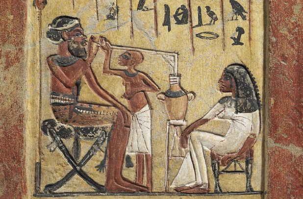
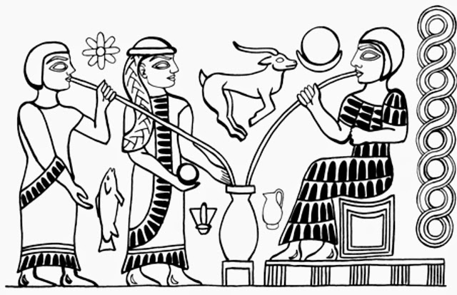

(Representación de un sirio tomando cerveza egipcia). Su descubrimiento fue accidental: se mezcló agua con cereales y sucedió el milagro. Como resultado los sumerios humedecían el pan con agua y la levadura fermentaba la mezcla que la convertía en bebida alcohólica. Se producía un ritual en el que la gente se unía. La historia de la cerveza es también la de la agricultura: los asentamientos se forjaban alrededor de los cultivos. Lo relevante es que era un alimento ya que tenía una fuente de azúcar difícil de conseguir. Su deidad de la cerveza era la Diosa Ninkasi.

(Los sumerios.Fuente: Historia de las civilizaciones). La bebida del pueblo En Egipto la denominaron “zythum” y era esencial en la dieta cotidiana. Mientras que el vino era para las clases altas, la cerveza era para el pueblo. En época de los faraones, sus fábricas producían hasta 4 millones de litros por año, tanto, que los graneros estaban prácticamente destinados a la cebada para su elaboración y la utilizaban como moneda de cambio. Los egipcios fueron los primeros en mercantilizar la cerveza. Como buenos comerciantes, dado que el precio este cereal era elevado, utilizaban una variedad del trigo: la espelta. Además descubrieron la malta, le agregaron azafrán, miel, jengibre y comino para darle sabor y color.

(En egipto llamaban a la cerveza “zythum”. Era esencial en la dieta cotidiana). La expansión Los griegos heredaron las técnicas de fabricación de cerveza de los elaboradores de Egipto, y a su vez traspasaron este conocimiento a los romanos, que la llamaron "cerevisia", en honor de la diosa Ceres de la agricultura. Una vez extendida, se utilizaban los granos de cereales disponibles de cada zona: en China el trigo, en Rusia el centeno y en Japón, el arroz. De allí surge el sake, que es considerada la cerveza más antigua utilizada en ritos sociales en honor a los dioses. En la Antigüedad, en China también se elaboraba cerveza llamada "kiu", utilizando cebada, trigo, espelta, mijo y arroz, mientras que las civilizaciones precolombinas de América utilizaban maíz en lugar de cebada. La cerveza de cebada proviene de Europa, trasladándose desde Armenia, Georgia y el sur de Rusia hasta Bohemia, Alemania, Bélgica y las Islas Británicas, donde se convertiría en aquella cerveza que conocemos en la actualidad.

(Cerveceros de Soria, España). ¿Cómo se prepara la cerveza? Sus cuatro ingredientes principales son: agua, cebada, levadura y lúpulo. Se puede utilizar cualquiera de estos cereales para fabricarla: cebada, trigo, maíz, centeno o arroz. Se le añade lúpulo, hierbas, frutas o chocolate. El primer paso de producción es el malteado del grano de cebada que se mezcla con agua para que germine y se descompongan los almidones para que aparezcan los azúcares. Se calienta el grano para frenar su germinado. El secado de la malta produce sabores y colores que formarán parte del producto final. Dependiendo del tipo de secado se producirán diferentes tipos de sabores. Se muele la malta y se mezcla con agua caliente para su maceración durante una hora, tiempo en el que se desprenden sus azúcares. Para el resultado final influye el tipo de agua utilizada, que debe ser pura. Se procesa el líquido macerado y se lo cuece con lúpulo, que actúa como conservante natural y le da el sabor característico. El tipo de lúpulo incide en el sabor y aroma, además de mejorar la espuma, lo cual influye en su estética. Se añade levadura, organismo vivo, que consume el azúcar y lo convierte en alcohol. Al pasar la cerveza por una doble fermentación esto le da sus características burbujas. Todas las cervezas son fabricadas de la misma manera, la diferencia de sabor, textura y color reside en el cereal utilizado. Con distintos tipos de levadura se consigue un sabor y aroma distinto. El proceso puede durar días o meses y los cambios de clima y temperatura influyen en el resultado final.

Cerveza en todo el mundo En el Norte de Europa se consumía como pan líquido por los azúcares y nutrientes. Era elaborada por mujeres en pequeñas cantidades porque no se podía conservar. En los monasterios la producción a gran escala fue en el Siglo X. Los monjes, vinculados a la agricultura, perfeccionaron sus recetas con los escritos de los egipcios, estudiando el proceso y mejorándolo. Empezaron a usar el lúpulo, marcando el fin de cervezas turbias y dulces. El lúpulo, planta trepadora, funcionaba conservante y era de fácil acceso. Actualmente se cultivan de diferentes variedades por todo el mundo. Produce un sabor amargo, transparencia y espuma. Comenzó a fabricarse en Alemania y en Europa Continental. En España, la cerveza fue popularizada en el siglo XVI por Carlos I de España y V de Alemania, tras su retirada al Monasterio de Yuste. El emperador instaló una pequeña fábrica de esta bebida en el monasterio, al que le había acompañado un maestro cervecero.

Sapporo es el hogar de la cerveza japonesa. En 1876 aparece la primera fábrica, utilizando la alemana como inspiración. A pesar del éxito de Sapporo, las más populares son las importadas. Pero la auténtica época dorada de la cerveza comienza a finales del siglo XVIII, con la incorporación de la máquina de vapor a la industria cervecera y el descubrimiento de la nueva fórmula de producción en frío, y culmina en el último tercio del siglo XIX, con los hallazgos de Pasteur relativos al proceso de fermentación. Se basa en someter a la bebida a altas temperaturas durante un periodo de tiempo determinado, matando así bacterias y levaduras no deseadas, y también deteniendo el proceso de fermentación.

En Dublín, Irlanda, la cerveza negra seca del tipo stout fue elaborada por primera vez en 1759 por el cervecero Arthur Guinness, en la empresa cervecera denominada St. James's Gate Brewery. El famoso Oktoberfest de Munich se remonta a 1810, en el casamiento del Príncipe Ludwig con la Princesa Teresa. Munich significa “el lugar del monje”. Accidentalmente crearon otro tipo de cerveza llamada Lager, la más popular en todo el mundo, mediante su almacenamiento en cuevas de hielo que creó otro tipo de levadura. Data de principios del siglo XIX por Gabriel Sedlmayr, pionero de la cerveza comercial que en 1840 introdujo el sacarímetro, el termómetro y una máquina de vapor. La fábrica Spaten, de Sedlmayr hizo espionaje industrial en otras partes de Europa. Creó la cerveza de Munich cobriza. Joseph Grohl creó la primera Lager dorada en la ciudad de Pilsen (actual República Checa), utilizando una malta muy pálida creando la Lager Pilsen Pale.
oktoberfest